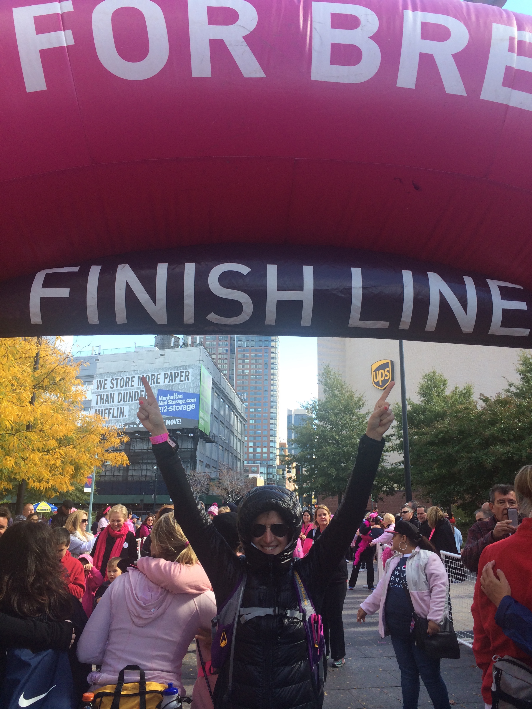
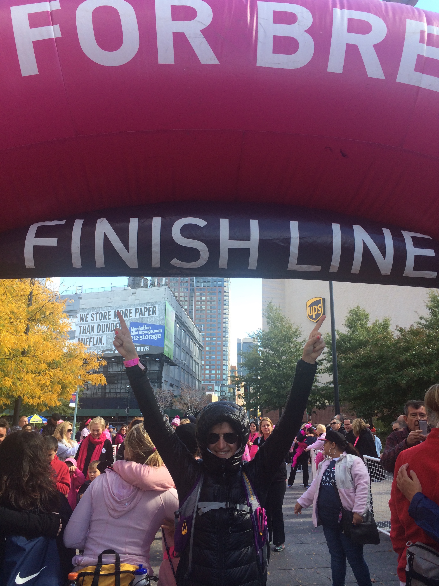

LILY WICK


 

Otto
Most bulldogs are ugly cute, or so people tell me. Not Otto. As you can see here, Otto is majestic. I have been Otto’s mother since the beginning of my senior year of college. Despite being completely irresistible, Otto has not been easy. He has major health and behavioral issues that, although much improved, do require special attention. Nonetheless, I love him unconditionally. I have always been an animal person (hence the hamster dreams), but since Otto, I have become a devoted animal lover. I love any and all things animal related, and am the first person to volunteer for any type of pet-related activity.
(image source: personal)
Lily’s Candy Shop
I believe in the transformative power of candy.
Recently, after a huge series of layoffs produced an all-time low in team morale at Avon, I put a bowl of Reese’s Peanut Butter Cups on my desk to ease the pain. Immediately coworkers began taking them by the fistful and gathering around my desk to chat while they indulged. Someone made a sign for “Lily’s Candy Shop” and another colleague set up a jar for donations to offset the cost of the candy. Eventually, realizing that there are people out there who (inexplicably) don’t like chocolate, I added Swedish Fish. Since then, I have mastered the art of candy curating, as you can see here. I send out email polls to measure “customer” satisfaction and keep a spreadsheet to monitor inventory. I am always on the prowl for post-holiday candy sales and have been known to return from trips schlepping supersized bags of Swedish Fish. The success of my philosophy has been backed by ample anecdotal consumer data. While I can’t definitively state that morale at Avon has improved overall, I notice a marked change in my department, and even the departments on neighboring floors (people make the trip to visit the Candy Shop). At NYU Stern, I will absolutely live by my candy philosophy, and most likely turn others into believers.
(image source: personal).
Hamster Dreams
This is an excerpt from my “Hamster Dreams” journal, completed when I was six in an attempt to persuade my parents to buy me a pet hamster. Not surprisingly (the journal is 20 something pages long) my parents agreed, only to have to bribe Petco to take back Herald, said hamster, after I discovered him nested in my American Girl Doll’s hair.
(image source: personal)
MacGyver
Much to my own surprise, I am extremely handy. I think I developed this skill out of necessity. I am the eldest of three girls. As a result, many of the duties that I imagine would otherwise fall to sons (largely because of societal stereotypes), end up falling in my lap. In addition, neither my mother nor father is particularly handy. I am frequently in the position where if I don’t figure out the solution, the problem simply won’t get fixed. I didn’t realize that this was an advantage until college, when my friends started calling me McGuyver after I knew to look for the fuse box when our lights mysteriously went out. Since then, I have taken great pride in my handiness and actively try to enhance my capabilities whenever possible.
(image source: http://bit.ly/1C4p9Nd)
Everest Base Camp
After I graduated from college, I spent four months traveling around Southeast Asia with my younger sister, Annie. In planning our trip, we compromised between activities I really wanted to do (teaching English and learning yoga in Bali) with activities she really wanted to do (extreme-sports adventures tempting fate). Number one on her list was hiking to Everest Base Camp. Everyone I know held their breath when it was confirmed we were actually going to attempt this summit. As this picture proves, I somehow made it thanks to sheer determination, albeit against all odds.
(image source: personal)
#chooseboobs
Like many millennials, I graduated college unsure of what I wanted to do, but nonetheless convinced that I would save the world. After two years working in advertising, I accepted a job at Avon in large part because I really liked the fact that the company had a very strong social justice agenda. Immediately after joining Avon, I signed up for the New York Breast Cancer Walk, which involves walking 39.3 miles over two days. I am not what you would call “active.” Physical exertion for me begins and ends with Pilates and other such mat-friendly regimes. I think this actually worked to my advantage. Everyone I emailed, using #chooseboobs as my subject line as well as social media tag, was so shocked (and probably terrified) at the thought of my attempting this that I raised almost 10 times more than I set out to – almost $15,000. I am so proud of every part of this accomplishment.
(image source: personal)